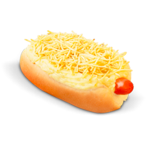

Lanches
Lanches
Cheddar Burger
Ingredientes
- 4 pães tipo hambúrguer
- 4 colheres de sopa de maionese de sua preferencia
- Folhas de agrião
- 4 harbúgueres de carne fritos
- 4 fatias de queijos tipo cheddar
- 2 pepinos em conserva em fatias
Modo de preparo
- Corte os pães.
- Passe maionese nas duas metades.
- Coloque folhas de agrião, o hambúrguer frito, o queijo e as fatias de pepino.
- Feche os sanduíches e sirva.
Sanduíche 3 queijos
Ingredientes
- 1/2 xícara de chá de maionese de sua preferencia
- Noz-moscada a gosto (opcional)
- 6 pãezinhos
- 6 fatias de queijo fresco tipo minas
- 6 fatias de queijo do suiço
- 6 fatias de queijo prato
Modo de preparo
- Misture a maionese com a noz-moscada.
- Corte os pãezinhos ao meio e passe um farta camada em cada metade.
- Recheie com 1 fatia de cada queijo.
- Cubra com outra metade e prenda com palitos.
Hot Dog
Ingredientes
- 6 pães tipo hot dog
- 6 colheres de maionese de sua preferencia
- 1 dente de alho amassado
- 2 xícaras de chá de batata palha
- 6 salsichas aferventadas
Modo de preparo
- Corte os pães e passa a maionese misturada com o alho.
- Espalhe a batata e coloque a salsicha